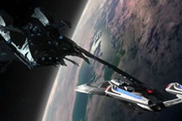
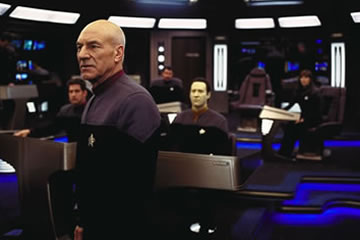
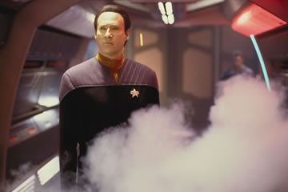
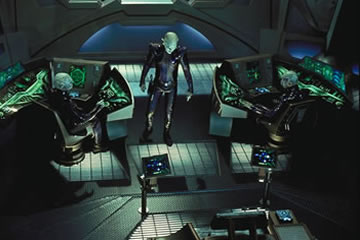
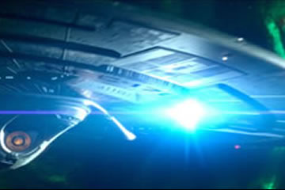

|

Publicado como artigo de
Especiais em janeiro de 2003


|
Por Luiz Felipe do Vale Tavares O que deu errado? Essa
a pergunta que no quer se calar entre os fs e os produtores
atuais de Jornada nas Estrelas. A resposta muito
simples: Tudo deu errado. Tudo que no deveria ter sido feito,
foi feito. Tudo que deveria ter sido evitado, no o foi. A
realidade a seguinte: Nmesis um filme ruim.  O incio no Senado Romulano eficaz. A morte bizarra de todo o Senado d margem a vrias boas especulaes do que vem pela frente, mas nenhuma vingou. O casamento de Riker e Troi um dos poucos bons atrativos, pois temos um momento importante e raro no filme, qual seja, a interao entre os personagens de A Nova Gerao. Pena que a cena seja curta e impregnada de pssimos dilogos. De qualquer forma, sempre um prazer v-los todos reunidos de novo. Em seguida somos brindados por uma cena ridcula de Picard, Data e Worf a bordo de um jipe da Federao vasculhando uma rea desrtica de um planeta. Por que usaram esse jipe? Eles no podiam vasculhar a rea a bordo da nave auxiliar que usaram para chegar na superfcie do planeta? A explicao bvia dentro de poucos minutos. Por uma incrvel coincidncia, os habitantes do planeta tambm dirigem jipes e logo temos uma cena de perseguio em quatro rodas. Concluso: o roteirista deve ser f de carteirinha dos filmes do "Mad Max" e quis incluir uma cena de perseguio no filme custe o que custar, mesmo que seja a credibilidade da srie que esteja em jogo. Acreditem ou no, a cena fica pior ainda. Worf, de uso de um canho do jipe, dispara tiros de phaser nos agressores. Concordo plenamente com Harry do famoso site Ain't It Cool News de que mataram a Primeira Diretriz nesse filme. Como que um grupo avanado desce em um planeta desconhecido, passeia de jipe de forma alm de explcita e depois sai dando tiros para todos os lados ???  Bom, felizmente acabou
logo a cena dos jipes e agora estamos a bordo da Enterprise
remontando a andride B-4. Talvez o elemento B-4 seja o maior
jogo sujo imposto pelos produtores contra os fs. Temos aqui uma
cpia do Data, com mnima significncia para a trama, que
apenas est presente para substituir o nosso Data quando ele vai
pelos ares no final. Sim, chegamos a esse ponto na franquia; a
mais sem vergonha utilizao do famigerado boto reset em
toda a srie.  Agora estamos entrando
na nica cena de brilho de todo o filme, que o jantar entre
Picard e Shinzon. tambm uma cena triste, pois mostra todo o
potencial que esse filme poderia ter tido e no foi aproveitado.
Os dilogos funcionaram muito bem nessa cena, sendo os nicos
verdadeiramente bem escritos em todo o filme. O personagem Shinzon
mostrou uma boa premissa; se ele tivesse tido uma abordagem
diferente no filme, certamente teramos um excelente vilo aqui.
Entretanto, logo aps essa cena do jantar ficamos sabendo que
tudo o que Shinzon disse mentira e que ele pretende
simplesmente atacar a Terra e matar toda a populao; e sem
qualquer grande motivo aparente. Pronto! Destruram o personagem,
que caiu na vala comum de vilo megalomanaco que quer destruir
por destruir. No d mais para levar Shinzon a srio como
vilo depois disso. A morte do Data foi outra bobagem sem precedentes. Foi descaradamente copiada em parte da cena da morte de Spock no segundo filme, mas realizada sem qualquer noo de importncia no evento da perda do personagem. No segundo filme, a morte de Spock uma cena bonita, muito bem realizada, onde temos Kirk e Spock separados entre si por um protetor de vidro. Na melhor interpretao de William Shatner, sentimos o desespero de Kirk e sua agonia pela inevitvel morte de Spock. Os dilogos finais ressaltam a forte amizade entre os dois. J em Nmesis tudo to rpido que nem temos tempo de sentir pela morte do Data. Boom!!! Data morreu... Mas no fiquem tristes, pois temos agora B-4 entre ns. lastimvel!!! Nmesis matou meu personagem favorito na srie e me fez sair indiferente do cinema. Mesmo aps reprises e mais reprises do segundo filme, mesmo sabendo que Spock volta no terceiro filme, a cena de sua morte ainda me toca e fico triste quando assisto. Essa a diferena entre uma cena bem realizada de uma mal realizada.  Eu queria muito gostar
desse filme; me esforcei durante toda a projeo para achar algo
de bom nesse amontoado de cenas sem nexo e importncia, mas no
achei nada de especial. Sa vazio do cinema. Preciso urgentemente
rever alguns bons episdios de A Nova Gerao para curar
essa depresso ps-Nmesis e relembrar os bons momentos
da srie.  A fotografia do filme
pssima, assim como a cinematografia. escuro demais, com
mal uso da pouca iluminao proporcionada em cada cena. A pior
parte a superfcie do planeta aliengena. Depois do filme Traffic,
todos querem imitar a alto contraste e o envelhecimento artificial
das imagens; Nmesis no foi exceo, mas o problema
que o uso de tais tcnicas no tem nada a ver com o filme.
Traffic um filme de autor, onde as imagens e as cores
utilizadas servem como funo essencial histria. Nmesis
no nada disso e nem pode tentar fingir ser. Outro
vergonhoso exemplo de m cinematografia a cena da Troi usando
seus poderes para localizar a Scimitar. O facho de luz direcionado
para seus olhos foi mal empregado e mais parece um trabalho
amador. O efeito desejado era aquele muito utilizado em clssicos
de horror dos anos 30, como Drcula e A Mmia, onde
o rosto escurecido com os olhos brilhantes mostrava o poder de
controle do personagem. Em Nmesis o efeito to mal
feito que a inteno passa despercebida. Os efeitos especiais so razoveis. No so timos, mas tambm no so ruins. Faltou um pouco de imaginao aqui para criar algo diferente. O que vemos so efeitos especiais iguais aos que vemos em Voyager e Enterprise. O ltimo filme de Jornada que contou com excelentes efeitos foi o Primeiro Contato, justamente porque contou com maior cuidado e utilizou maquetes, que do um show nessas naves CGI dos ltimos dois filmes. As maquetes so mais detalhadas, mais bonitas e permitem melhores ngulos para as filmagens. Naves CGI so artificiais e sem beleza. A trilha sonora de Jerry Goldsmith a pior de toda a srie. apenas uma reciclagem de temas j utilizados nos filmes anteriores. No h praticamente material novo aqui. Concluindo, espero sinceramente que esse seja o ltimo filme de A Nova Gerao. A franquia j est no poo; no precisa descer ainda mais. bom encerrar enquanto a srie ainda goza de boa reputao. Temos atualmente um
bom equilbrio na franquia. Trs sries de excelente qualidade
(Srie Clssica, Nova Gerao e Deep Space
Nine) contra duas sries ruins (Voyager e Enterprise).
Quanto aos filmes, temos tambm uma boa mdia: quatro timos
filmes (2, 4, 6) e dois bons (1 e 3), dois razoveis (7 e 9) e
dois ruins (5 e 10). Se a franquia parar por aqui, temos ainda um
bom saldo e um nome Jornada nas Estrelas ainda a honrar. Se
a franquia continuar no estado em que est, o futuro certamente
ser maligno, onde a srie perder todas as boas lembranas
que temos dela. |